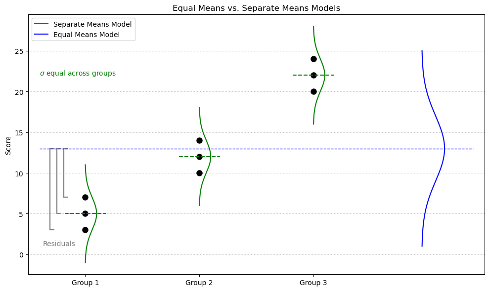

Explain the purpose of analysis of variance (ANOVA) for comparing means across multiple groups.
Formulate and interpret hypotheses for ANOVA tests.
Check model assumptions to ensure the validity of ANOVA results.
Construct and interpret ANOVA tables using the extra sum of squares principle.
Compare full and reduced models using \(F\)-tests.
Understand and apply the Kruskal-Wallis test as a non-parametric alternative.
Distinguish between fixed and random effects in the context of ANOVA.
Calculate sample sizes needed to detect a specified effect size using power analysis.
ANOVA: Analysis of Variance
Purpose: Test equality of means from more than two populations by comparing variability within groups to variability between groups.
Assumptions:
All populations have normal distributions (reasonable symmetry in samples).
Population standard deviations are equal (to ensure differences in means aren’t confounded by differences in variability).
Independence within (achieved automatically with random samples) and between samples.
Hypotheses:
\(H_0\): All population means are equal.
\(H_a\): At least one population mean differs from another.
ANOVA is a preliminary test; if significant, it indicates that at least one mean differs. Specific pairwise differences can be explored using post-hoc tests (not covered in detail here).
Comparing Models in ANOVA
Two competing models:
Equal means model (EMM): Assumes all groups share the same population mean (null hypothesis).
Separate means model (SMM): Assumes each group has its own mean (alternative hypothesis).
Hypotheses:
\(H_0\): \(\mu_1 = \mu_2 = \mu_3\)
\(H_a\): At least one pair of means differs
A residual is defined as: \(\text{ Residual} = \text{Observed} - \text{Predicted}\)

Equal Means vs. Separate Means Models. Comparison of two models: one assumes all groups share a single population mean (equal means model), and the other estimates a separate mean for each group (separate means model). Brackets illustrate residuals from observed values to the grand mean.
Equal Means Model (EMM)
All observations are predicted using the grand mean: \(\bar{X} = 13\)
Sum of squared residuals (SSR): \(\text{SSR}_{\text{EMM}} = 462\)
Level
Observation 1
Observation 2
Observation 3
1
\((3 - 13)^2 = 100\)
\((5 - 13)^2 = 64\)
\((7 - 13)^2 = 36\)
2
\((10 - 13)^2 = 9\)
\((12 - 13)^2 = 1\)
\((14 - 13)^2 = 1\)
3
\((20 - 13)^2 = 49\)
\((22 - 13)^2 = 81\)
\((24 - 13)^2 = 121\)
Separate Means Model (SMM)
Each group has its own sample mean (perfect fit).
Sum of squared residuals: \(\text{SSR}_{\text{SMM}} = 24\)
Level
Observation 1
Observation 2
Observation 3
1
\((3 - 5)^2 = 4\)
\((5 - 5)^2 = 0\)
\((7 - 5)^2 = 4\)
2
\((10 - 12)^2 = 4\)
\((12 - 12)^2 = 0\)
\((14 - 12)^2 = 4\)
3
\((20 - 22)^2 = 4\)
\((22 - 22)^2 = 0\)
\((24 - 22)^2 = 4\)
Notes
A perfect fit means predicted values match the observations exactly, so residuals are zero.
The sum of squared residuals (SSR) quantifies total error: \[
\text{SSR} = \sum (\text{Observed} - \text{Predicted})^2 = \sum (\text{Residual})^2
\]
Comparing EMM and SMM Using an \(F\)-Test
To formally compare the equal means model (EMM) and separate means model (SMM), we use an \(F\)-test. This test evaluates whether the extra parameters in the more complex model (SMM) explain a significantly greater portion of the total variability.
See the ANOVA table below for how these calculations break down.
ANOVA Table
Source
df
SS
MS
F
P
Model (Between / Extra)
2
438
219
54.75
0.0001
Error (Within / Full / SMM)
6
24
4
Total (Reduced / EMM)
8
462
df: Degrees of freedom
SS: Sum of squares
MS: Mean square = SS / df
F: Ratio of explained to unexplained variability: \(F\)-statistic = \(\frac{\text{MS}_{\text{model}}}{\text{MS}_{\text{error}}}\)
P: \(p\)-value from the \(F\)-distribution
Notes
Degrees of freedom reflect how many means are being estimated.
Mean square values (MS) are variances: \(\text{MS} = \frac{\text{SS}}{\text{df}}\), which follows the general variance formula: \(\text{var}(x) = \frac{\sum (X_i - \bar{X})^2}{n - 1}\)
The top row of the table (Between / Extra) is how much variance is explained by using separate means.
The mean square error (MSE) estimates within-group variance: \(\text{MSE} = 4\)
The root mean square error (RMSE) is:\(\text{RMSE} = \sqrt{\text{MSE}} = \sqrt{4} = 2\)
This is also our estimate of the shared population standard deviation: \(\hat{\sigma} = \text{RMSE} = 2\)
Understanding Degrees of Freedom in ANOVA
Degrees of freedom reflect how many parameters (means) are estimated and how much data is available to estimate variability.
In ANOVA, the total degrees of freedom are split into two parts:
Source
Formula
Interpretation
Model (Between Groups)
\(k - 1\)
Number of group means (parameters) being estimated minus 1
Error (Within Groups)
\(n - k\)
Leftover variation after estimating \(k\) group means
Total
\(n - 1\)
Total variation in the dataset
For example, with 3 groups and 9 total observations:
Model df = \(3 - 1 = 2\)
Error df = \(9 - 3 = 6\)
Total df = \(9 - 1 = 8\)
Visualizing the \(F\)-Test
The \(F\)-statistic is compared to an \(F\)-distribution with 2 and 6 degrees of freedom. (Every \(F\)-distribution has 2 degrees of freedom.)
\(F_{2,6} = 54.75\)
Critical value at \(\alpha = 0.05\): \(F_{2,6}^{*} \approx 5.14\)
The region to the right of 54.75 under the curve gives the \(p\)-value, which is very small (\(p = 0.0001\)), indicating strong evidence against the null model (EMM).
\(F\)-distribution. Right-skewed \(F_{2,6}\) distribution showing critical value (5.14), observed test statistic (54.75), and rejection region representing \(p\)-value (0.0001).
Interpretation
The top row of the ANOVA table shows how much variability is explained by the model.
The second row shows how much variability is left over (residual error).
A high \(F\)-value means the SMM explains significantly more variability than the EMM.
We conclude that at least one group mean differs significantly from the others.
See the summary figure below for a visual breakdown of how these components are computed and interpreted.
ANOVA Table Breakdown. Visual summary of how degrees of freedom, sum of squares, mean squares, and the \(F\)-statistic are calculated and interpreted for the model, error, and total variation.
Estimates the typical distance between observed and predicted values (i.e., the standard deviation of residuals).
Coefficient of Variation (CV)
A unitless measure of relative variability (standard deviation relative to the mean): \[
\text{CV} = \frac{\text{RMSE}}{\text{Grand Mean}} \times 100 = \frac{\text{RMSE}}{\bar{X}} \times 100 = \frac{\sqrt{\text{MSE}}}{\bar{X}} \times 100
\]
SAS code for ANOVA
Code
* Generalized Linear Model: Extends analysis to multiple groups (e.g., ANOVA for 3+ groups);
proc glm data = dataSet;
class group;
model responseVar = groupingVar; * Fits an ANOVA;
run;
SAS ANOVA Output Summary
SAS provides the \(R^2\), root MSE, and coefficient of variation in its ANOVA output. See the example output below for how these metrics are reported.
Levels (e.g., groups or treatments) are explicitly of interest and not intended to generalize beyond the study or represent a larger population.
Inference applies only to the levels included in the analysis.
Common in controlled experiments with pre-defined groups or treatments.
The model estimates a unique mean for each level.
Random Effects
Levels represent a random sample from a larger population of possible groups or conditions.
The goal is to make inferences about the entire population of levels—not just those observed in the study. That is, even if you cannot sample every possible level, the levels in the study are meant to be representative of the population of interest.
The model accounts for two sources of variation:
Residual variance (within-group variability): variance of each observation from the overall mean
Random effect variance (between-group variability): variance associated with the random effects
Observations are nested within groups drawn at random.
There is typically more error associated with random effects models.
Statistical Considerations
Random effects models include additional variability from the group-level random component. This increases standard errors but yields more conservative and generalizable inferences.
Fixed effects models do not account for this extra group-level variability, which may lead to underestimated standard errors if used when random effects would be more appropriate.
Choosing the wrong model type can increase the risk of Type I or Type II errors.
In short:
Use fixed effects when your levels (e.g., treatments) are all of interest and exhaust the population you care about.
Use random effects when your levels are sampled from a larger population and you want to generalize your conclusions.
Writing Up Results
ANOVA tests whether the between-group variability is significantly larger than the within-group variability, providing evidence that group means differ.
The \(F\)-test indicates whether at least one group mean differs.
It does not identify which specific means are different or how they differ.
Additional procedures such as post-hoc tests are required to explore these questions of interest (QOIs).
Steps for Writing Results
State the research question, experimental conditions, and context clearly.
Describe the study design, including how data were collected, sample sizes, and treatments or groups.
Check and summarize assumptions:
Use graphical tools (e.g., histograms, Q-Q plots, residual plots).
Note whether normality, equal variance, and independence were reasonable.
Provide descriptive statistics for each group.
Report the ANOVA test results:
Include the \(F\)-statistic, degrees of freedom, \(p\)-value, and relevant effect sizes (e.g., \(R^2\), RMSE, CV).
Include residual diagnostics:
Mention if any transformations were applied.
Note any violations and how they were addressed (e.g., using Welch’s ANOVA).
Interpret the results in context:
Discuss whether the null hypothesis was rejected.
Relate the findings to the original research question.